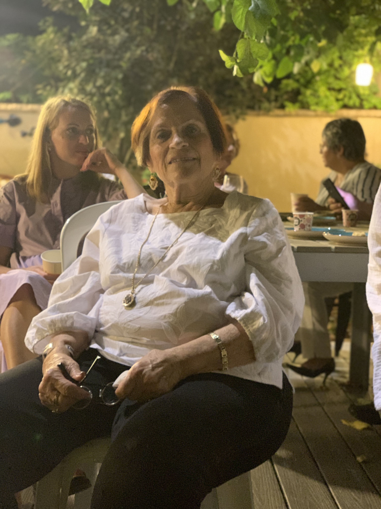
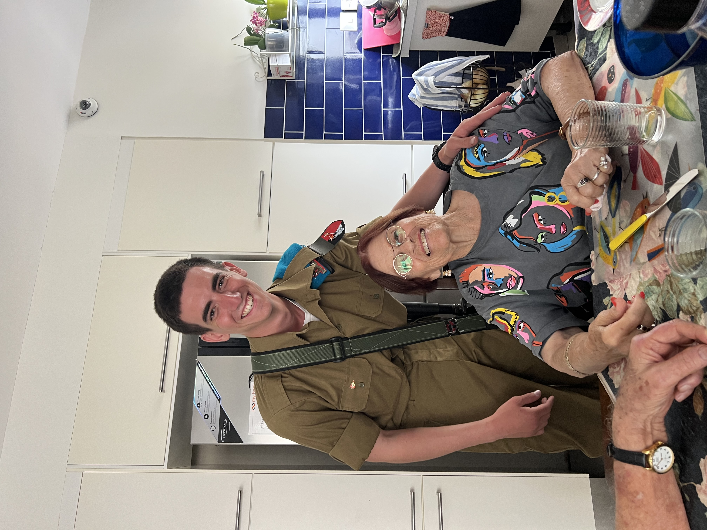
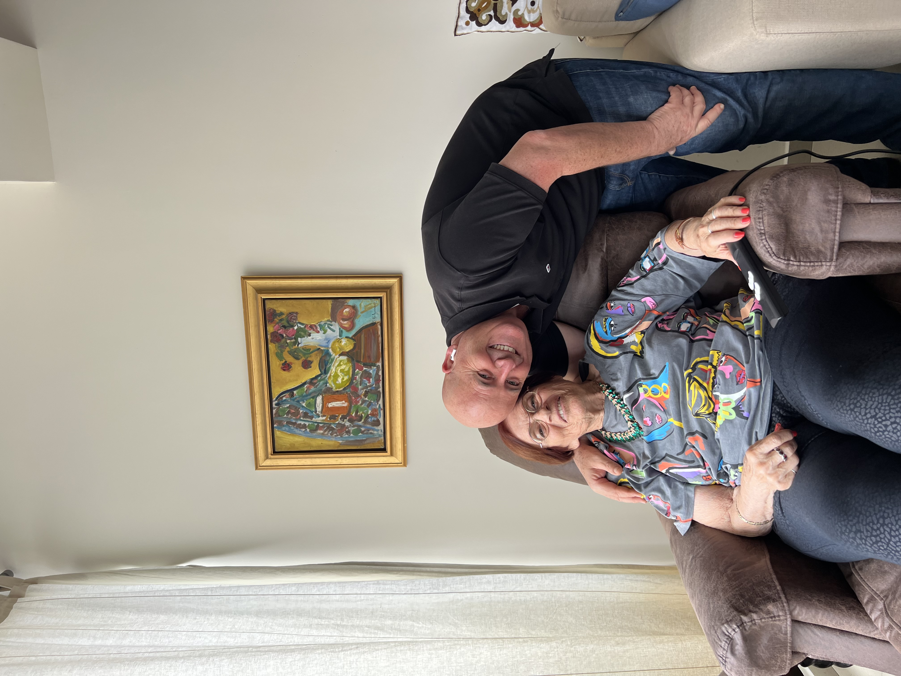
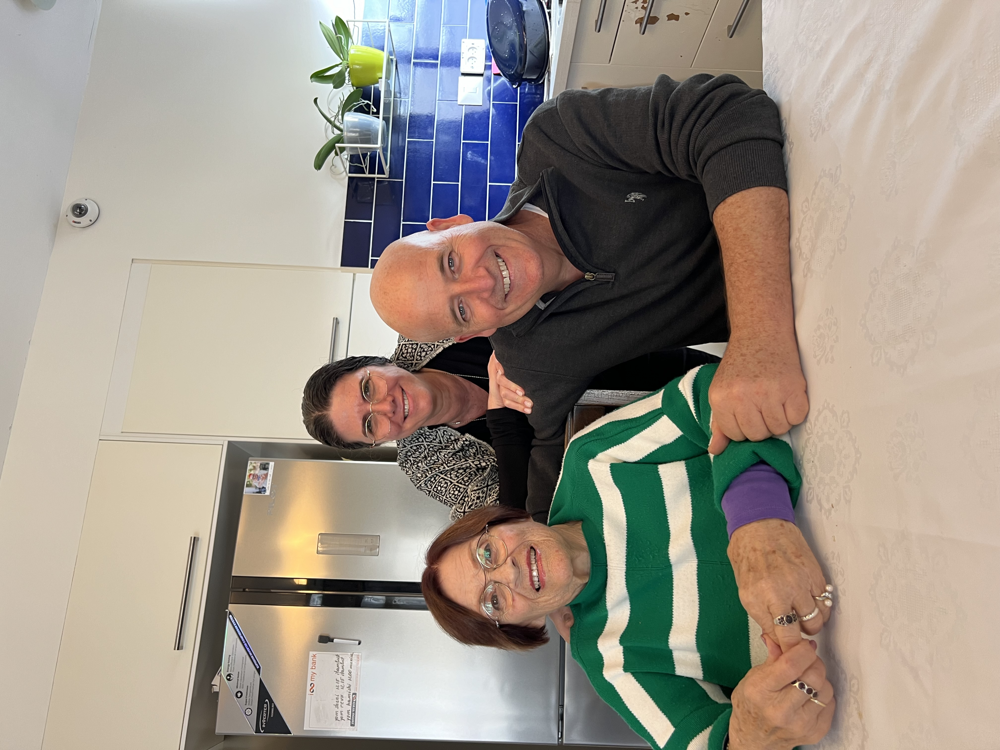
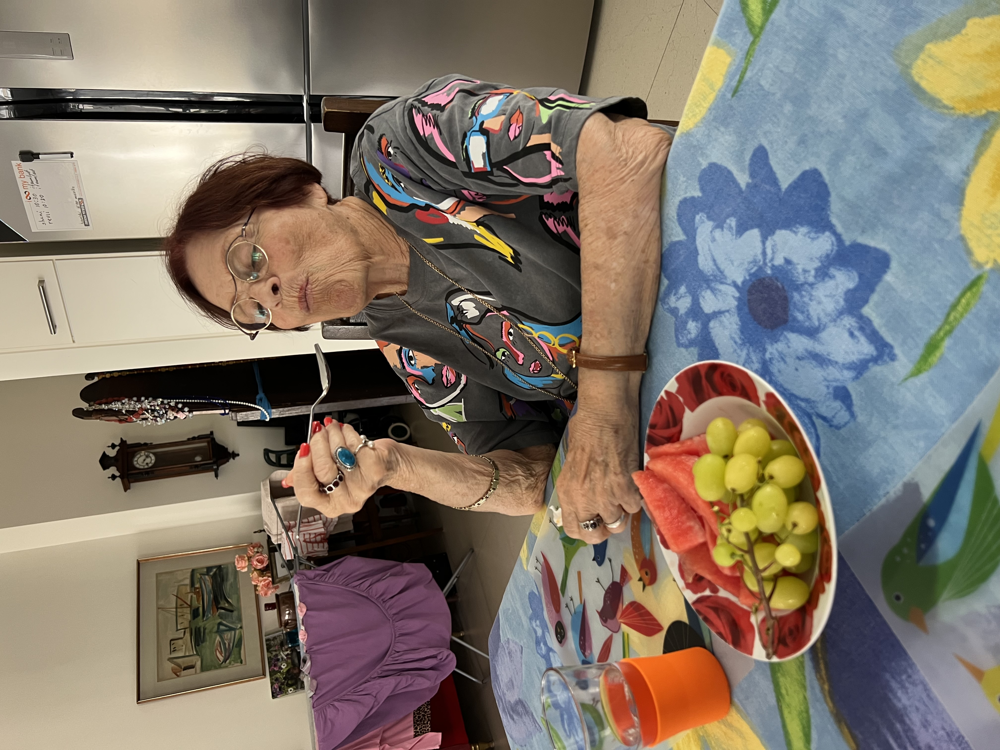
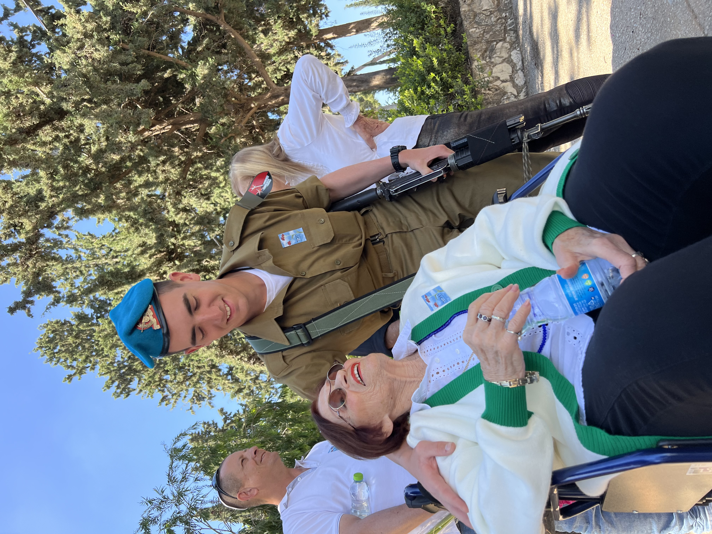

גלריה






×

18/7/2024 - 8/6/1938
"עצרתי לנוח והמשכתי הלאה"
סבתלמה הייתה סבתא מיוחדת מלאה באהבה ובמרץ, קמה כל בוקר ב-5 כדי לשחות בים ומתחילה את היום מלאה באנרגיות טובות. מסידורים לפגישה עם חברות, תור אצל הקוסמטיקאית, פדיקוריסטית, נהג מונית של הנכדים לחוגים וכמובן שאיך אפשר לסיים את היום בלי איזה קונצרט או הצגה. אין מצב לפגוש את סבתא בלי לק, אודם ושיער מסודר, אפילו כדי לזרוק את הזבל.
סבתא הייתה פאשניסטה, היה לה סטייל מיוחד, צבעוני וייחודי. היה לה אוסף של אינסוף אביזרים, תכשיטים, משקפיים, צעיפים וכובעים. היא תמיד התלבשה בסטייל, לא משנה אם זה היה ביום יום או באירוע מיוחד, היא תמיד הצליחה להראות את האישיות שלה דרך הסטייל שלה.
סבתא אהבה במיוחד מוזיקה ותמיד ניסתה להדביק אותנו הנכדים באהבה הזו. היא לקחה אותנו לקונצרטים וממש קיוותה שנתאהב גם (פחות הצליח לצערנו😅)
היא דאגה שכולנו נלמד לנגן ובכל דרך אפשרית ועל כל סוג אפשרי של כלי נגינה מסקסופון, קלרינט, חליל צד, כינור ועד לתופים, גיטרה ופסנתר.
כשהיינו מגיעים אליה הביתה, אפשר היה כבר מבחוץ לשמוע מוזיקה קלאסית ברקע (אנדרה ריו, שם שיחקק לנצח) וכמובן איך אפשר בלי פרוסה מעוגת השמרים המפורסמת, שטרודל ואפילו איזה קומפוט קר (בלי ענבים כן? לפחות לחלק מאיתנו)
סבתא שלנו טיילה בכל פינה בעולם, כמעט ואין מדינה שהיא לא ביקרה בה ולמדינות שאהבה היא דאגה לקחת גם את הנכדים, סין, ארהב, אירופה. היא אהבה לטייל ולחוות תרבויות חדשות, אנשים שונים ונופים מרהיבים, אין אחד שלא מכיר את התמונה המפורסמת שלה על בת היענה 😜
הטיולים האלו היו חלק משמעותי מחייה, והשאירו זיכרונות בלב של כל מי שחווה אותם איתה.